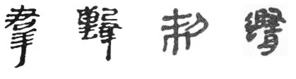
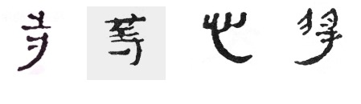

「銀雀山漢墓竹簡」是一九七二年四月,在山東省臨沂銀雀山 漢墓出土時發現的,共約七千五百多枚;是當時在我國境內一次性、 同一地點出土枚數字數最多、最大型的竹簡。根據竹簡的整體 風格,專家認為抄寫的年代約在漢文帝、漢景帝至漢武帝前期 (公元前179年到公元前118年)。
總體看來,簡帛牘書法有三種風格,一為篆書、二為草書、三是 隸書。銀雀山漢簡屬於隸書風格,書寫風格分為兩類:一類為緊湊 規矩,筆力工整穩健;另一類為草率書寫,表現出氣韻生動、靈巧 飄逸。
竹簡在書法美學與藝術史中,承載了古文字至今文字的轉捩作用。 銀雀山漢簡作為漢簡典範之一,受學術界重視,是硏究漢簡書法不可 或缺的範本,在《中國書法簡帛字典》(吉林文史出版社-2022)中就 可以見到其主導地位。
銀雀山漢簡起筆藏鋒,用筆圓潤、率真舒展。相對篆書筆筆中鋒 而言,漢簡 以中鋒為主,偏鋒為輔,中側鋒並用。
不篆不隸、亦篆亦隸。竹簡主要用於文書紀錄,由於使用竹片, 字型圓/長方、扁平,字的重心在左上方,左縮右放,捺/磔帶隸書意味, 長尾筆更為其特色。筆劃不求平均,字型有“因字賦形”的趨向,有些 字甚至因為每枚竹片窄長的形制,而改變字的結構,由左右結構 改變為上下結構。例如:群、擊、制、隨(異構,左右上下換位)

因應每枚竹片的窄長形制,通篇佈局是:豎成行,橫無列。字體婉約,黑白分佈有虛實, 筆劃間取險拙、不追求平均。字與字之間疏密有致,按照字有左或右的向下拖筆,可順勢作長 拖筆,以上整體章法形成了竹簡獨特的美學。 圖例:寺、等、心、將

我國簡帛牘書寫千多年，究竟簡牘始於何時？ 從文字學分析， 就知道其答案! 甲骨文、金文中的「冊」字， 就描繪了用繩子將竹簡編連起來的樣子，這表明在殷商時期就已經有使用簡帛牘的可能性! 文天祥的著名詩句「人生自古誰無死，留取丹心汗青」的「汗青」原來亦與竹簡書寫有關! 下表列出一些字詞及成語之「簡」源。